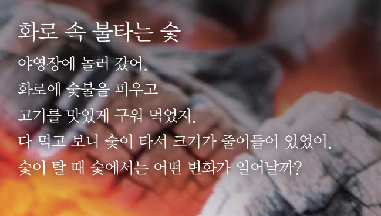
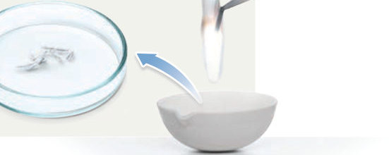
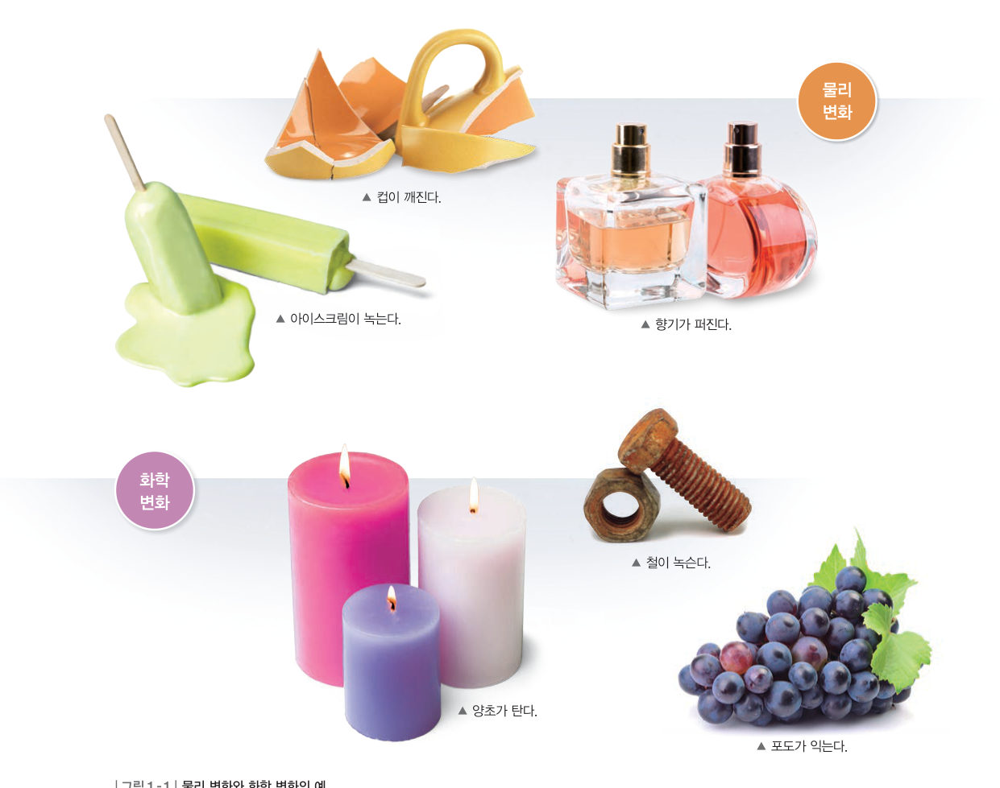
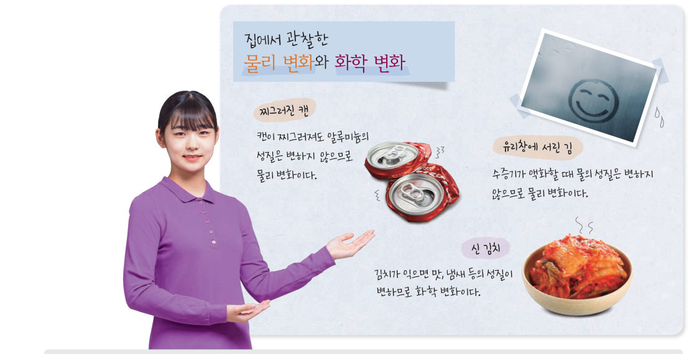

살아있는 교과서 · Ⅰ. 화학 반응의 규칙과 에너지 변화 · 1. 물질 변화와 화학 반응식 · 01 11~15쪽
주변에서 일어나는 물질 변화
설탕이 녹을 때와 탈 때, 마그네슘 리본을 구부릴 때와 태울 때는 무엇이 다를까? 가상 실험과 입자 모형으로 물리 변화와 화학 변화를 구분하고, 주변에서 그 예를 찾아보자.
🎯 이 단원을 배우면 — 물리 변화와 화학 변화의 차이를 설명하고, 일상생활에서 물리 변화와 화학 변화의 예를 찾을 수 있다.
첫 번째 열쇠숯이 탈 때 숯에서는 어떤 변화가 일어날까? 11쪽

11쪽화로 속 불타는 숯
야영장에 놀러 갔어. 화로에 숯불을 피우고 고기를 맛있게 구워 먹었지. 다 먹고 보니 숯이 타서 크기가 줄어들어 있었어. 숯이 탈 때 숯에서는 어떤 변화가 일어날까?
▶ 이미 배운 내용 | 연소는 물질이 산소와 빠르게 반응하여 열과 빛을 내는 현상이다.
이 단원과 관련해 이미 알고 있는 것에 표시해 보자.
해 보기마그네슘의 변화 관찰하기 12쪽
12쪽설탕이 타면 설탕의 성질은 어떻게 될까?
설탕을 가열하면 녹아서 액체 상태가 된다. 이 액체 상태의 설탕을 계속 가열하면 설탕이 타서 맛과 색깔이 변한다. 다음 활동으로 물질 변화가 일어날 때 물질의 고유한 성질은 어떻게 되는지 알아보자.

12쪽마그네슘 리본 3 개를 그대로 두기 · 구부리기 · 태우기
길이 3 cm인 마그네슘 리본 3 개를 ① 그대로 페트리 접시에 놓고, ② 구부려 놓고, ③ 증발 접시 위에서 태운 뒤 남은 재를 놓는다.
①~③에 묽은 염산을 2 방울씩 떨어뜨리고 변화를 관찰한다.
⚠️ 보안경과 내열 장갑을 반드시 착용한다. 마그네슘 리본은 환기가 잘 되는 곳에서 태우고, 이때 나오는 빛을 가까이에서 계속 보지 않는다.
가상 실험마그네슘 리본 3 개를 처리해 보자
마그네슘 리본 3 개를 페트리 접시에 놓았어요. ②는 구부리고, ③은 태워 보세요.
1② 구부린 마그네슘 리본은 모양만 변했고, 색깔과 광택은 ① 그대로 둔 리본과 . 묽은 염산을 떨어뜨리면 ①과 ②에서는 모두 .
2③ 태우고 남은 재는 이고, 묽은 염산을 떨어뜨려도 . 마그네슘이 타면 마그네슘과 성질이 새로운 물질(산화 마그네슘)이 생긴다.
💬마그네슘 리본을 구부릴 때와 태울 때 마그네슘의 성질은 어떻게 되는지 이야기해 보자.
교과서물질 변화를 어떻게 구분할까? 13쪽
마그네슘 리본을 구부리면 모양은 변하지만 색깔, 광택, 묽은 염산과의 반응 등 마그네슘 고유의 성질은 변하지 않는다. 마그네슘 리본이 구부러지거나 설탕이 녹는 것처럼 물질 고유의 성질은 변하지 않으면서 모양이나 상태가 변하는 현상을 물리 변화라고 한다.
반면, 마그네슘 리본이 타면 마그네슘과 성질이 다른 물질이 생성된다. 마그네슘 리본이나 설탕이 타는 것처럼 어떤 물질이 성질이 다른 새로운 물질로 변하는 현상을 화학 변화라고 한다. 화학 변화가 일어날 때에는 열과 빛이 발생하거나 앙금이나 기체가 생성되기도 한다. 또, 색깔과 냄새가 변하기도 한다.

그림 1-1물리 변화와 화학 변화의 예 — 아이스크림이 녹는다 · 컵이 깨진다 · 향기가 퍼진다 / 양초가 탄다 · 포도가 익는다 · 철이 녹슨다
입자로 보기물리 변화와 화학 변화 속 입자
버튼을 눌러 변화가 일어날 때 입자가 어떻게 되는지 살펴보세요.
1마그네슘 리본을 구부리거나 얼음이 녹을 때 물질을 이루는 입자 자체는 . 마그네슘 리본이 탈 때에는 마그네슘 원자가 산소와 결합하여 이 생긴다.
분류해 보자물리 변화일까, 화학 변화일까?
✔다음 현상을 분류해 보자.
컵이 깨진다.
향기가 퍼진다.
양초가 탄다.
포도가 익는다.
철이 녹슨다.
유리창에 김이 서린다.
김치가 시어진다.
오이를 썬다.
탐구 · 조사물리 변화와 화학 변화의 예 조사 14~15쪽

14쪽집에서 관찰한 물리 변화와 화학 변화 — 유리창에 서린 김 · 찌그러진 캔 · 신 김치
모둠별로 조사할 장소(집, 교실, 운동장, 기타)를 정하고, 모둠 이름·구성원·조사 장소·일정·조사할 내용·역할 분담을 포함해 조사 계획서를 작성한다.
조사 여러 가지 물질 변화를 조사하고, 해당하는 장면을 스마트 기기로 찍는다.
의사소통 모둠별로 조사한 내용을 정리하여 발표한다.
예시 수증기가 액화할 때 물의 성질은 변하지 않으므로 물리 변화이다. · 캔이 찌그러져도 알루미늄의 성질은 변하지 않으므로 물리 변화이다. · 김치가 익으면 맛, 냄새 등의 성질이 변하므로 화학 변화이다.
조사 장소
물리 변화의 예와 근거
화학 변화의 예와 근거
1정리하기 물리 변화와 화학 변화를 구분하는 기준은 물질 고유의 이 변하는지, 즉 이 생성되는지이다.
평가 기준
스스로 평가
탐구 기능 물리 변화와 화학 변화를 옳게 구분하였는가?
탐구 기능 물리 변화와 화학 변화의 예를 다양하게 찾았는가?
인성 모둠 구성원과 협력하며 활동하였는가?
스스로 확인하기12쪽 학습 목표를 달성했는지 확인해 보자 15쪽
1물질 고유의 성질은 변하지 않으면서 모양이나 상태가 변하는 현상을 라고 한다.
2물질이 연소하거나 과일이 익는 현상은 이다.
3과학적 사고력 고기가 익는 현상은 물리 변화와 화학 변화 중 어떤 것에 해당하는지 쓰고, 그 까닭을 설명해 보자.
🧩 첫 번째 열쇠 (15쪽)
숯이 탈 때 숯과 성질이 다른 새로운 물질이 생성되며, 열과 빛이 발생한다. 따라서 숯이 타는 현상은 ( ) 변화이다.
개념 확인주변에서 일어나는 물질 변화
1물질 고유의 성질은 변하지 않으면서 모양이나 상태가 변하는 현상을 라고 한다.
2어떤 물질이 성질이 다른 새로운 물질로 변하는 현상을 라고 한다.
3다음 현상이 물리 변화인지 화학 변화인지 고르시오.
⑴ 양초가 탄다.
⑵ 설탕이 물에 녹는다.
⑶ 아이스크림이 녹아 흘러내린다.
⑷ 고기가 익는다.
⑸ 설탕을 가열하면 검게 타서 쓴맛이 난다.
⑹ 깎아 놓은 사과의 색이 갈색으로 변한다.
⑺ 철 대문이 녹슨다.
⑻ 물에 떨어뜨린 잉크가 퍼진다.
4화학 변화가 일어날 때 나타나는 현상을 모두 고르시오.
✔옳으면 O, 옳지 않으면 X
⑴ 화학 변화가 일어나면 물질의 성질이 변한다.
⑵ 물리 변화가 일어나면 물질의 모양이나 상태가 변할 수 있다.
⑶ 물리 변화가 일어나면 새로운 물질이 생성된다.
⑷ 얼음이 녹는 것은 화학 변화이다.
스스로 정리하기주변에서 일어나는 물질 변화 15쪽
1물리 변화와 화학 변화
⑴ : 물질 고유의 성질은 변하지 않으면서 모양이나 상태가 변하는 현상 — 예) 컵이 깨진다, 아이스크림이 녹는다(고체에서 액체로의 변화) ⑵ : 어떤 물질이 성질이 다른 새로운 물질로 변하는 현상 — 예) 양초가 탄다(양초와 의 반응), 철이 녹슨다, 김치가 시어진다
평가 기준
스스로 평가
물리 변화와 화학 변화의 차이를 설명할 수 있다.
일상생활에서 물리 변화와 화학 변화의 예를 찾을 수 있다.
제출학생 정보 · 제출하기
모든 활동을 마친 뒤 제출하면 전체가 한 번에 채점되고 피드백이 나타나요. 답안은 선생님 스프레드시트(중3 탭)에 기록돼요.